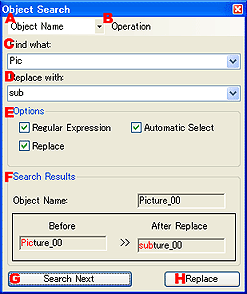

|

|
- 検索対象。
検索対象文字列の種類を指定します。
オブジェクト名、コメント、ユーザ情報、テキスト内容、から指定することができます。
- 操作。
検索ウインドウで利用可能な操作を実行します。
- 次を検索
次の候補を検索します。
- 前を検索
前の候補を検索します。
- 選択に追加
検索結果を選択オブジェクトセットに追加します。
- 置換
現在の条件で、置換処理を実行します。
- すべて選択
検索合致オブジェクトを全て選択します。
- 検索する文字列。
検索文字列を入力します。正規表現オプションが指定されている場合は、正規表現を入力します。
- 置換後の文字列。
置換結果文字列を入力します。置換オプションが指定されているいる必要があります。
- 検索オプション。
検索オプションを指定します。
- 正規表現
検索文字列の指定に正規表現を使用します。
- 自動選択
検索一致オブジェクトを選択します。
- 置換
検索文字列に対して、文字列置換処理を行います。
- 検索結果。
検索結果が表示されます。
- オブジェクト名
検索マッチ文字列を持つオブジェクトの名前が表示されます。
- 置換前
置換処理を行う前の文字列が表示されます。一致部分が赤色で表示されます。
- 置換後
置換処理を行った後の文字列が表示されます。置換部分が赤色で表示されます。
- 次を検索。
次の候補を検索します。
- 置換。
現在の条件で、置換処理を実行します。
|